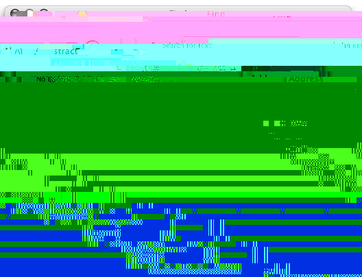
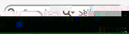

Searching for references
The Find window
You can search for a substring in any key listed with the Find command under the Edit menu (⌘F). BibDesk will look in every file you have open and display results in the Find window, where you can copy/paste, drag/drop, or double-click to edit them as much as you want.
Quick search
The quick search field lets you enter sub-strings that might be in author names, titles or dates, and the reference view will display only matching publications. There are several built-in options. For example, All Fields (search every entry except the pub type at once), Keywords (search the keywords entries) and Pub Type (search by pub type).
The quick search field is configurable by selecting ‘Add Field...’, which allows you to add any string you want to the menu. If a publication has that field, it will be searched. Adding the field ‘Cite Key’ (with that exact capitalization) will allow you to search the citation key of publications. (All Fields also searches the citation key.)
The quick search field has a memory. Across runs of the application, it will remember what key was being used, as well as which strings were in use for every key. If you press enter after typing a search string, it will also add it to a list of recent searches, as seen in this screenshot: